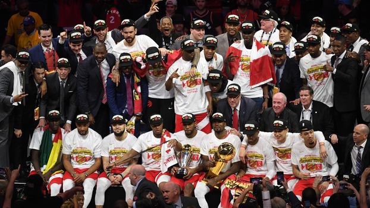
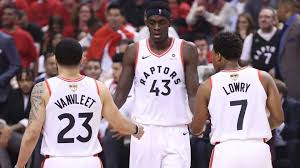
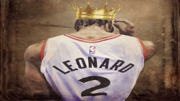

O Toronto Raptors é um time de basquete profissional canadense sediado em Toronto, Ontário. Os Raptors competem na National Basketball Association como um clube membro da Conferência Leste e Divisão do Atlântico.A equipe foi fundada em 1995 como parte da expansão da NBA no Canadá, juntamente com o Vancouver Grizzlies. Desde a temporada de 2001-02, os Raptors têm sido o único time canadense na liga, já que os Grizzlies se mudaram de Vancouver, na Colúmbia Britânica, para Memphis, Tennessee. Com a chegada de Kawhi Leonard, a equipe conseguiu o seu primeiro título da NBA em 2019.
CAMBEONATO 2019/2020
O time canadense Toronto Raptors derrotou na noite desta quinta-feira (13) os californianos do Golden State Warriors por 114 a 110, em uma partida eletrizante na quadra rival, em Oakland, e conquistou seu primeiro título na história da NBA
O que esperar do Toronto Raptors para 2019-20
Com a saída de dois jogadores titulares, agora a equipe precisa buscar substitutos que mereçam estas vagas dentro do elenco.As novidades do incio da temporada foram VanVleet e Anunoby, que na temporada passada eram reservas. O primeiro deve se manter como titular.
Kawhi Leonard faz história
MVP das finais quando defendeu o San Antonio Spurs, Kawhi Leonard foi o mais uma vez o MVP das finais 2018/19. Ele é apenas o segundo jogador a ser o melhor das finais por times diferentes. O outro é LeBron James.